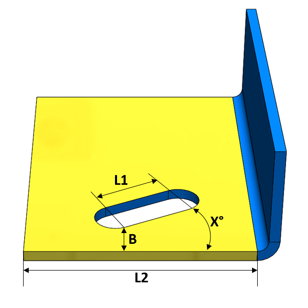
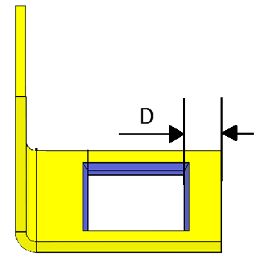
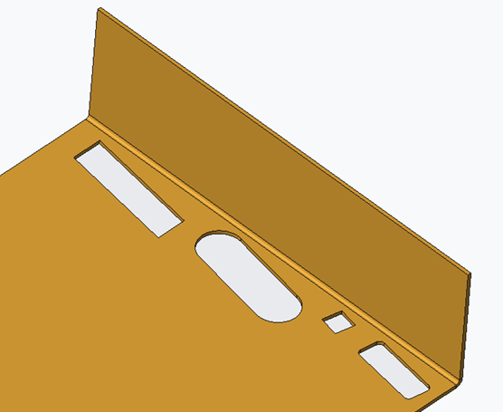

カットアウトのエッジとパーツのエッジ間の最小距離の比は、長さL1およびL2のうち小さい方の値に(1/n)を掛けた値以上である必要があります。
カットアウトからパーツのエッジまでの距離が最小値を下回る場合、対象領域において板材が変形または割れ（亀裂）を生じる可能性があります。
製造方法によって許容される距離は異なります。カットアウトがエッジに近すぎると、エッジが変形して膨れ（バルジ）を形成する場合があります。これは、部品をクランプするためのスペースが不十分であることにより発生することがあります。カットアウトのエッジとパーツのエッジ間の最小距離の比は、長さL1およびL2のうち小さい方の値に(1/n)を掛けた値以上である必要があります。
一般的なガイドラインとして、カットアウトからパーツのエッジまでの最小距離は、長さL1およびL2のうち小さい方の最小長さの1/10倍以上であることが推奨されます。ユーザーは、長さL1とL2の間の角度を指定することでカットアウト解析を制限できます。推奨角度（X）は20°以下です。

ここでは、
B = カットアウトからパーツエッジまでの最小距離
X = 線分（L1、L2）間の角度
注記:
面取り付きのカットアウトもサポートされています。

以下の標準形状は「線分長さに基づく（Based on line length）」でサポートされています。
